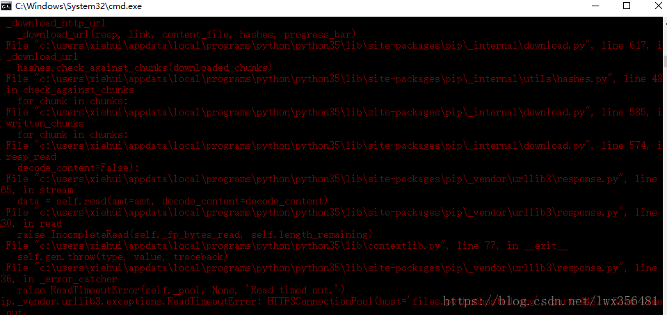
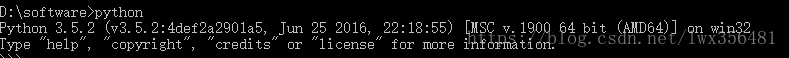
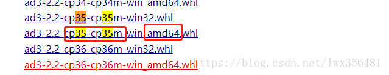
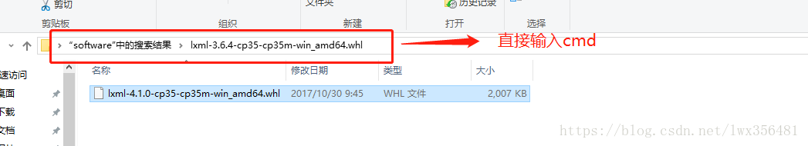
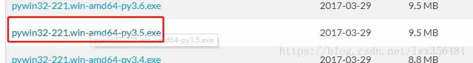

Scrapy は、Python で実装された、Webサイトのデータをクロールし、構造化データを抽出するために書かれたアプリケーションフレームワークです。
Scrapy は、データマイニング、情報処理、履歴データの保存などを含む一連のプログラムによく使用されます。
通常、Scrapy フレームワークを使うことで、指定したWebサイトのコンテンツや画像を取得するクローラーを簡単に実装できます。
Scrapy アーキテクチャ図（緑の線はデータの流れ）

-
Scrapy Engine(引擎)Spider、ItemPipeline、Downloader、Scheduler間の通信、信号、データ転送などを担当する。
-
Scheduler（スケジューラ）: エンジンから送信されたRequestリクエストを受け取り、一定の方法で整理・整列してキューに入れ、エンジンが必要とするときにエンジンに返します。
-
Downloader（ダウンローダー）: Scrapy Engine（エンジン）から送信されたすべてのRequestsリクエストのダウンロードを担当し、取得したResponsesをScrapy Engine（エンジン）に返します。エンジンはSpiderに処理させます。
-
Spider（爬虫）: すべてのResponsesを処理し、そこからデータを分析・抽出して、Itemフィールドに必要なデータを取得し、フォローアップが必要なURLをエンジンに提出して、再びScheduler（スケジューラー）に入ります。
-
Item Pipeline(管道): Spider で取得したItemを処理し、後処理（詳細な分析、フィルタリング、保存など）を行う場所です。
-
Downloader Middlewares（下载中间件）: ダウンロード機能をカスタマイズして拡張できるコンポーネントと考えることができます。
-
Spider Middlewares（Spider中间件）: エンジンとSpiderの間の通信をカスタマイズして拡張・操作できる機能コンポーネントと理解できます（例：Spiderに入るResponses、Spiderから出るRequests）。
Scrapyの動作フロー
コードを書いたら、プログラムが実行を開始します...
- 1 エンジン：Hi！Spider、どのWebサイトを処理しますか？
- 2 Spider：ボスがxxxx.comを処理してほしいと言っています。
- 3 エンジン：最初に処理する必要があるURLを渡してください。
- 4 Spider：给你，第一个URL是xxxxxxx.com。
- 5 エンジン：Hi！スケジューラー、ここにrequestリクエストがあるので、並べ替えてキューに入れてください。
- 6 スケジューラー：わかりました、処理しています、少し待ってください。
- 7 エンジン：Hi！スケジューラー、処理済みのrequestリクエストを渡してください。
- 8 スケジューラー：どうぞ、これが処理済みのrequestです。
- 9 エンジン：Hi！ダウンローダー、ボスのダウンロードミドルウェアの設定に従って、このrequestリクエストをダウンロードしてください。
- 10 ダウンローダー：わかりました！どうぞ、これがダウンロードしたものです。（失敗した場合：sorry、このrequestのダウンロードは失敗しました。そしてエンジンはスケジューラーに、このrequestのダウンロードが失敗したので記録しておいて、後で再ダウンロードしましょうと伝えます。）
- 11 エンジン：Hi！Spider、これがダウンロードしたもので、すでにボスのダウンロードミドルウェアに従って処理済みです。自分で処理してください（注意！ここではresponsesはデフォルトでdef parse()という関数に渡されて処理されます）
- 12 Spider：（データ処理完了後、フォローアップが必要なURLについて）Hi！エンジン、ここに2つの結果があります。これは私がフォローアップする必要があるURLで、これは私が取得したItemデータです。
- 13 エンジン：Hi！パイプライン、ここにitemがあるので処理してください！スケジューラー！これはフォローアップが必要なURLなので処理してください。そして、ボスが必要とするすべての情報を取得するまで、4番目のステップからループします。
- 14 パイプライン＆スケジューラー：わかりました、すぐにやります！
注意！スケジューラー内にrequestが存在しなくなった場合のみ、プログラム全体が停止します。（つまり、ダウンロードに失敗したURLについても、Scrapyは再ダウンロードします。）
Scrapy クローラーを作成するには、全部で4つのステップが必要です：
- 新規プロジェクト作成 (scrapy startproject xxx)：新しいクローラープロジェクトを作成します。
- 目標を明確にする（items.py を書く）：取得したい目標を明確にします
- クローラーを作成する（spiders/xxspider.py）：クローラーを作成してWebページのクロールを開始します
- 内容を保存する（pipelines.py）：クロールした内容を保存するパイプラインを設計します
安装
Windowsインストール方法
pipのバージョンをアップグレード：
pip install --upgrade pip
pipでScrapyフレームワークをインストール：
pip install Scrapy
Ubuntuインストール方法
Python以外の依存関係をインストール：
sudo apt-get install python-dev python-pip libxml2-dev libxslt1-dev zlib1g-dev libffi-dev libssl-dev
pipでScrapyフレームワークをインストール：
sudo pip install scrapy
Mac OSインストール方法
Mac OSシステムの場合、システム自体が内蔵のpython2.xのライブラリを参照するため、デフォルトでインストールされているパッケージは削除できません。しかし、python2.xでScrapyをインストールするとエラーになり、python3.xでインストールしてもエラーになります。最終的にScrapyを直接インストールする方法が見つからなかったので、別のインストール方法でインストール手順を説明します。解決方法はvirtualenvを使ってインストールすることです。
$ sudo pip install virtualenv $ virtualenv scrapyenv $ cd scrapyenv $ source bin/activate $ pip install Scrapy
インストール後、コマンドターミナルで scrapy と入力するだけで、以下のような結果が表示されれば、インストールが成功したことを意味します。

入门案例
学习目标
- Scrapyプロジェクトを作成する
- 抽出する構造化データ（Item）を定義する
- WebサイトをクロールするSpiderを作成し、構造化データ（Item）を抽出する
- 抽出したItem（つまり構造化データ）を保存するために Item Pipelines を作成する
一. 新建项目(scrapy startproject)
クロールを開始する前に、新しいScrapyプロジェクトを作成する必要があります。カスタムプロジェクトディレクトリに入り、次のコマンドを実行します：
scrapy startproject mySpider
ここで、mySpider はプロジェクト名です。mySpider フォルダが作成されることが確認できます。ディレクトリ構造はおおよそ次のようになります：
以下で、各主要ファイルの役割を簡単に紹介します：
mySpider/
scrapy.cfg
mySpider/
__init__.py
items.py
pipelines.py
settings.py
spiders/
__init__.py
...
これらのファイルはそれぞれ次のとおりです：
- scrapy.cfg：プロジェクトの設定ファイル。
- mySpider/: プロジェクトのPythonモジュールであり、ここからコードを参照します。
- mySpider/items.py：プロジェクトの目標ファイル。
- mySpider/pipelines.py：プロジェクトのパイプラインファイル。
- mySpider/settings.py：プロジェクトの設定ファイル。
- mySpider/spiders/：クローラーコードを格納するディレクトリ。
二、目標を明確にする(mySpider/items.py)
私たちはクロールしようとしています。http://www.itcast.cn/channel/teacher.shtmlWebサイト内の全ての講師の氏名、役職、個人情報。
mySpiderディレクトリにあるitems.pyを開きます。
Item は構造化データのフィールドを定義し、クロールしたデータを保存するために使います。Python の dict に似ていますが、エラーを減らすための追加の保護を提供します。
scrapy.Item クラスを作成し、型が scrapy.Field のクラス属性を定義することで、Item を定義できます（ORM に似たマッピング関係と理解できます）。
次に、ItcastItem クラスを作成し、item モデル（model）を構築する。
import scrapy class ItcastItem(scrapy.Item): name = scrapy.Field() title = scrapy.Field() info = scrapy.Field()
三、制作爬虫 （spiders/itcastSpider.py）
クローラーの機能は2つのステップに分かれます：
1. データをクロールする
現在のディレクトリでコマンドを入力すると、mySpider/spider ディレクトリ内に itcast という名前のクローラが作成され、クロールするドメイン範囲が指定されます：
scrapy genspider itcast "itcast.cn"
mySpider/spider ディレクトリ内の itcast.py を開くと、デフォルトで次のコードが追加されています：
import scrapy
class ItcastSpider(scrapy.Spider):
name = "itcast"
allowed_domains = ["itcast.cn"]
start_urls = (
'http://www.itcast.cn/',
)
def parse(self, response):
pass
実際には、自分で itcast.py を作成して上記のコードを書くこともできますが、コマンドを使えば定型コードを書く手間が省けます。
Spider を構築するには、scrapy.Spider クラスを使ってサブクラスを作成し、3つの必須属性と1つのメソッドを定義する必要があります。
name = "" ：このクローラーの識別名であり、一意でなければなりません。異なるクローラーには異なる名前を定義する必要があります。
allow_domains = [] は検索するドメイン範囲、つまりクローラの制約領域です。クローラがこのドメイン配下のウェブページのみをクロールすることを規定し、存在しないURLは無視されます。
start_urls = () ：クロールするURLのタプル/リスト。クローラーはここからデータの取得を開始します。したがって、最初にダウンロードされるデータはこれらのurlsから始まります。他のサブURLはこれらの開始URLから継承的に生成されます。
parse(self, response) ：解析メソッドです。各初期URLのダウンロードが完了すると呼び出されます。呼び出し時には、各URLから返されるResponseオブジェクトが唯一のパラメータとして渡されます。主な役割は以下の通りです：
返されたWebページデータ（response.body）を解析し、構造化データを抽出します（itemを生成）
次のページのURLリクエストを生成します。
start_urls の値をクロールする必要がある最初のURLに変更します
start_urls = ("http://www.itcast.cn/channel/teacher.shtml",)
parse()メソッドを修正します。
def parse(self, response):
filename = "teacher.html"
open(filename, 'w').write(response.body)
次に実行して確認してみましょう。mySpider ディレクトリで実行します：
scrapy crawl itcast
はい、それは itcast です。上のコードを見てください。これは ItcastSpider クラスの name 属性であり、scrapy genspider コマンドを使用するときの唯一のクローラー名です。
実行後、出力されたログに [scrapy] INFO: Spider closed (finished) が表示されれば、実行が完了したことを意味します。その後、現在のフォルダ内に teacher.html ファイルが現れます。その中には、今まさにクロールしようとしたウェブページの全ソースコード情報が含まれています。
注意:Python2.x のデフォルトのエンコーディング環境は ASCII です。取得したデータのエンコーディング形式と一致しない場合、文字化けが発生する可能性があります。保存するコンテンツのエンコーディング形式を指定できます。通常、コードの最上部に追加できます。
import sys
reload(sys)
sys.setdefaultencoding("utf-8")
この3行のコードは Python2.x で中文のエンコーディングを解決する万能の鍵です。長年にわたる不満を受けて Python3 は賢くなり、デフォルトのエンコーディングは Unicode になりました...（皆さんが早く Python3 を採用できることを願っています）
2. データを取得する
Webページ全体のクロールが完了しました。次はデータの抽出プロセスです。まずページのソースコードを観察します：
<div class="li_txt">
<h3> xxx </h3>
<h4> xxxxx </h4>
<p> xxxxxxxx </p>
一目瞭然でしょう？直接 XPath を使ってデータの抽出を始めましょう。
xpath メソッドは、xpath ルールを入力するだけで対応する html タグノードを特定できます。詳細な内容は参照できますxpath 教程。
xpath 構文が分からなくても大丈夫です。Chrome はワンクリックで xpath アドレスを取得する方法を提供しています（右键->检查->copy->copy xpath）、下図のようになります：

ここで、いくつかの XPath 式の例と対応する意味を示します：
/html/head/title：HTMLドキュメント内の...を選択<head>标签内的<title>元素/html/head/title/text()：上記の...を選択<title>元素的文字//td：すべての...を選択<td>元素//div[@class="mine"]：...を持つすべての...を選択class="mine"属性的div元素
例えば、私たちがウェブサイトを読み取る場合http://www.itcast.cn/Webサイトのタイトルについては、itcast.py ファイルのコードを次のように修正します：
# -*- coding: utf-8 -*-
import scrapy
# 以下三行是在 Python2.x版本中解决乱码问题，Python3.x 版本的可以去掉
import sys
reload(sys)
sys.setdefaultencoding("utf-8")
class Opp2Spider(scrapy.Spider):
name = 'itcast'
allowed_domains = ['itcast.com']
start_urls = ['http://www.itcast.cn/']
def parse(self, response):
# 获取网站标题
context = response.xpath('/html/head/title/text()')
# 提取网站标题
title = context.extract_first()
print(title)
pass
以下のコマンドを実行します：
$ scrapy crawl itcast ... ... 传智播客官网-好口碑IT培训机构,一样的教育,不一样的品质 ... ...
私たちは以前、mySpider/items.pyでItcastItemクラスを定義しました。ここでそれをインポートします：
from mySpider.items import ItcastItem
次に、取得したデータを ItcastItem オブジェクトにカプセル化して、各講師の属性を保存できます：
from mySpider.items import ItcastItem
def parse(self, response):
#open("teacher.html","wb").write(response.body).close()
# 存放老师信息的集合
items = []
for each in response.xpath("//div[@class='li_txt']"):
# 将我们得到的数据封装到一个 `ItcastItem` 对象
item = ItcastItem()
#extract()方法返回的都是unicode字符串
name = each.xpath("h3/text()").extract()
title = each.xpath("h4/text()").extract()
info = each.xpath("p/text()").extract()
#xpath返回的是包含一个元素的列表
item['name'] = name[0]
item['title'] = title[0]
item['info'] = info[0]
items.append(item)
# 直接返回最后数据
return items
パイプラインの処理はとりあえず行わず、後で詳しく紹介します。
保存数据
scrapy で情報を保存する最も簡単な方法は主に4つあります。-o で指定した形式のファイルを出力します。コマンドは以下の通りです：
scrapy crawl itcast -o teachers.json
json lines形式で、デフォルトはUnicodeエンコーディング。
scrapy crawl itcast -o teachers.jsonl
csv カンマ区切り形式で、Excelで開けます。
scrapy crawl itcast -o teachers.csv
xml格式
scrapy crawl itcast -o teachers.xml
思考
コードを以下の形式に変更しても、結果はまったく同じです。
yield がここで果たす役割を考えてください（Python yield 使用浅析)：
# -*- coding: utf-8 -*-
import scrapy
from mySpider.items import ItcastItem
# 以下三行是在 Python2.x版本中解决乱码问题，Python3.x 版本的可以去掉
import sys
reload(sys)
sys.setdefaultencoding("utf-8")
class Opp2Spider(scrapy.Spider):
name = 'itcast'
allowed_domains = ['itcast.com']
start_urls = ("http://www.itcast.cn/channel/teacher.shtml",)
def parse(self, response):
#open("teacher.html","wb").write(response.body).close()
# 存放老师信息的集合
items = []
for each in response.xpath("//div[@class='li_txt']"):
# 将我们得到的数据封装到一个 `ItcastItem` 对象
item = ItcastItem()
#extract()方法返回的都是unicode字符串
name = each.xpath("h3/text()").extract()
title = each.xpath("h4/text()").extract()
info = each.xpath("p/text()").extract()
#xpath返回的是包含一个元素的列表
item['name'] = name[0]
item['title'] = title[0]
item['info'] = info[0]
items.append(item)
# 直接返回最后数据
return items
原文链接：https://segmentfault.com/a/1190000013178839
晴天
182***4239@qq.com
参考地址
pip を使用して scrapy をインストールする際に失敗した場合の解決方法
1、（この環境にはpythonがインストールされています）scrapy をインストールするとき、pip install scrapy は通常失敗します。タイムアウトのエラーが発生します。

そのため、別の方法でインストールする必要があります。まず scrapy のインストール中に使用する依存ライブラリをインストールしてから、scrapy をインストールすると、インストールに成功します。
インストールが必要な依存ライブラリは lxml、pyOpenSSL、Twisted、pywin32 です。注意すべき点は、インストールするこれらのライブラリはすべてwheelを介してインストールするということです。したがって、これらのライブラリをインストールする前に、まずwheelをインストールする必要があります。コンソールウィンドウを開いて、pip install wheel と入力し、先にwheelライブラリをインストールします。
これらのライブラリをインストールする際、ダウンロードする.whlファイルのバージョン番号が、自身のPythonのバージョン番号に対応している必要があることに注意してください。例えば

私のPythonのバージョンは3.5 64ビットであるため、ダウンロードする.whlのバージョンはXXX-cp35-cp35-win-amd64.whlを選択する。

lxmlをインストールし、https://www.lfd.uci.edu/~gohlke/pythonlibs/#twistedlxmlに対応する環境のPython用のwhlファイルを確認します。本記事では lxml-4.1.0-cp35-cp35m-win_amd64.whl を使用しています。ダウンロード完了後、ファイルのディレクトリでコンソールウィンドウを起動すると、下図のようにコンソールを起動できます。pip install lxml-4.1.0-cp35-cp35m-win_amd64.whl と入力すれば、インストールが成功します。バージョンが正しくないと表示された場合、Pythonとwhlファイルのバージョンが対応していないということです。

pyOpenSSL をインストールするには、コンソールに直接入力しますpip install pyOpenSSLそして、インストールが完了するのを待ちます。
Twistedをインストールする。https://www.lfd.uci.edu/~gohlke/pythonlibs/#twisted のサイトで適切なインストール用whlファイルを見つけ、インストール手順はlxmlのインストールと同じである。
安装pywin32，在https://sourceforge.net/projects/pywin32/files/pywin32/，找到对应的安装文件，该文件为.exe结尾的文件。直接到下载的保存目录，执行exe文件，然后按照提示安装。

上記のライブラリのインストールが完了したら、scrapyのインストールを開始できます。コンソールを開き、pip install scrapy を実行します。筆者も最初はscrapyのインストールでエラーが出ましたが、その後すべてのライブラリをインストールしたところ、無事にインストールできました。プロセス中にタイムアウトの問題が発生する可能性もありますが、その場合は1、2回再試行すれば十分です。
晴天
182***4239@qq.com
参考地址
晴天
182***4239@qq.com
参考地址
Scrapy执行crawl命令报错：ModuleNotFoundError: No module named 'win32api'
今日初めて新しいパソコンでscrapyを使用しましたが、多くの問題に遭遇し、思わず愚痴をこぼしたくなりました。
基本环境：
问题描述：
在费了半天劲成功安装好scrapy后，crawl报错：“ModuleNotFoundError: No module named ‘win32api’”
解決方法（2017.09.23更新）：
今振り返ってみると、これも依存パッケージの不足によるエラーであり、Windowsシステムでのみ発生するものです。
以前Stack Overflowで調べたようにWindowsシステムにパッチを当てる必要はなく、直接Pythonにライブラリをインストールします（以前の方法と比べると、実際にはより上位の層にパッチを当てるようなものです）——pypiwin32。
（2017.08.18作成）
Stack Overflowで解決策を検索し、その手順に従って2つの操作を実行し、エラーを解決することに成功しました。しかし、最初のステップは実は冗長で、2番目のステップを直接実行するだけでよいのではないかと思います。
晴天
182***4239@qq.com
参考地址
tOmMy
era***q.com
Python3でクロールしたファイルを保存する際の問題について：
代码如下：
ここで注意すべき点がいくつかあります：
tOmMy
era***q.com